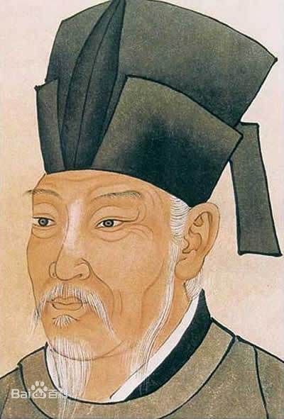

唐诗简介> |李商隐|杜甫|李白|
白居易简介

白居易（772年－846年），字乐天，号香山居士，又号醉吟先生，祖籍山西太原 [1-2] ，到其曾祖父时迁居下邽，生于河南新郑。 [3] 是唐代伟大的现实主义诗人，唐代三大诗人之一。白居易与元稹共同倡导新乐府运动，世称“元白”，与刘禹锡并称“刘白”。 [4]
白居易的诗歌题材广泛，形式多样，语言平易通俗，有“诗魔”和“诗王”之称。官至翰林学士、左赞善大夫。
公元846年，白居易在洛阳逝世，葬于香山。有《白氏长庆集》传世，代表诗作有《长恨歌》《卖炭翁》《琵琶行》等。
参考资料：百度百科